AD Connector用サービスアカウント・権限委任
仕様
構成・動作
| 管理対象 | 役割・運用上の扱い |
|---|---|
ADConnectorService |
AD Connectorへ登録する専用のADドメインユーザーです。人が通常作業で使用するユーザーとは分けます。 |
Connectors |
権限委任に使用するグローバル／セキュリティグループです。サービスアカウントをメンバーとして追加します。 |
ad\Users |
サービスアカウントと委任用グループを配置します。 |
ad\Computers\WorkSpaces |
WorkSpacesのコンピューターオブジェクトを配置し、Connectorsへ必要な権限を委任します。 |
AD Connectorは、登録したサービスアカウントを使用してユーザーとグループを読み取ります。WorkSpacesの利用には、コンピューターのドメイン参加とコンピューターオブジェクトの作成権限も必要です。本手順では、ユーザー名とパスワードを登録する専用の通常ユーザーを使用します。
AD Connectorの前提条件とサービスアカウントへの権限委任
管理範囲
本手順では、お客様管理OU内のサービスアカウント、グループおよびWorkSpaces専用OUを管理します。専用OUは自動作成されないため、未作成の場合は本手順で作成します。WorkSpacesの「ターゲットドメインと組織単位」には、権限委任先と同じOUを指定します。
⚠️ 注意：アカウントの配置先と権限委任先を分ける
ConnectorsとADConnectorServiceの配置先はad\Usersです。権限委任先はad\Computers\WorkSpacesです。アカウントの配置先だけを見て、Usersへ委任しないでください。
制約事項
- サービスアカウントは、
Domain Usersと承認済みのConnectorsへ所属させます。Domain Admins、Enterprise Admins、AWS Delegated Administratorsなどの高権限グループへ追加しません。 - サービスアカウントは有効かつ未ロックの状態を維持し、初回ログオン時のパスワード変更を要求しない設定にします。
- KerberosおよびLDAPによるネットワーク認証を妨げる設定を行いません。
- ドメインルート、
AWS ReservedおよびDomain Controllersを本手順の委任先にしません。
構築作業
1. Connectorsグループを作成する
サービスアカウントへ権限を直接付与せず、委任用グループを介して管理できるようにします。
- ADUCを対象ドメインの管理資格情報で起動します。
ad.example.comを展開し、ad、Usersの順に選択します。Usersを右クリックし、「新規作成」から「グループ」を選択します。
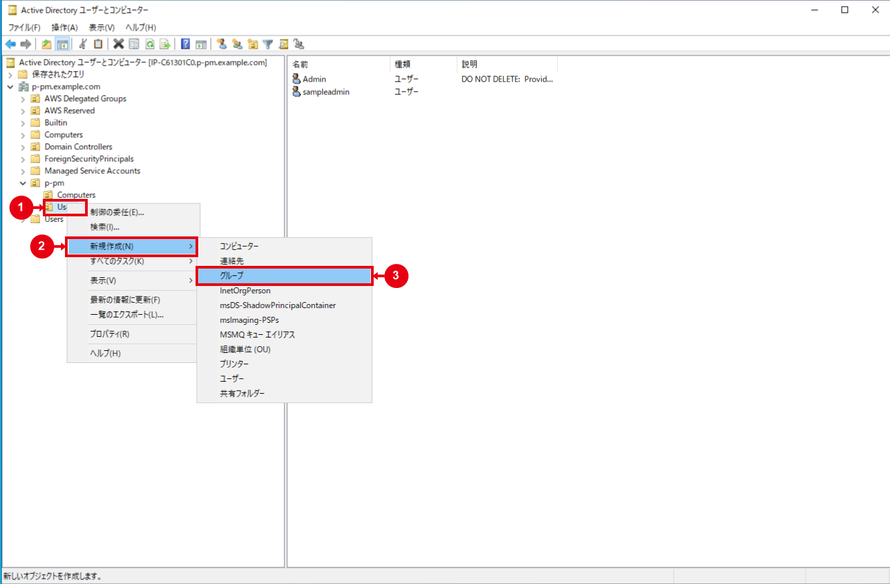
- 次の値を入力します。
| 項目 | 設定値 |
|---|---|
| グループ名 | Connectors |
| グループのスコープ | グローバル |
| グループの種類 | セキュリティ |
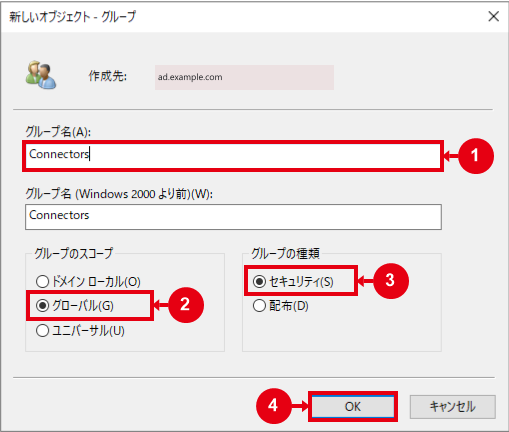
- 「OK」を選択します。
Usersの一覧に、種類「セキュリティ グループ - グローバル」のConnectorsが1件表示されることを確認します。
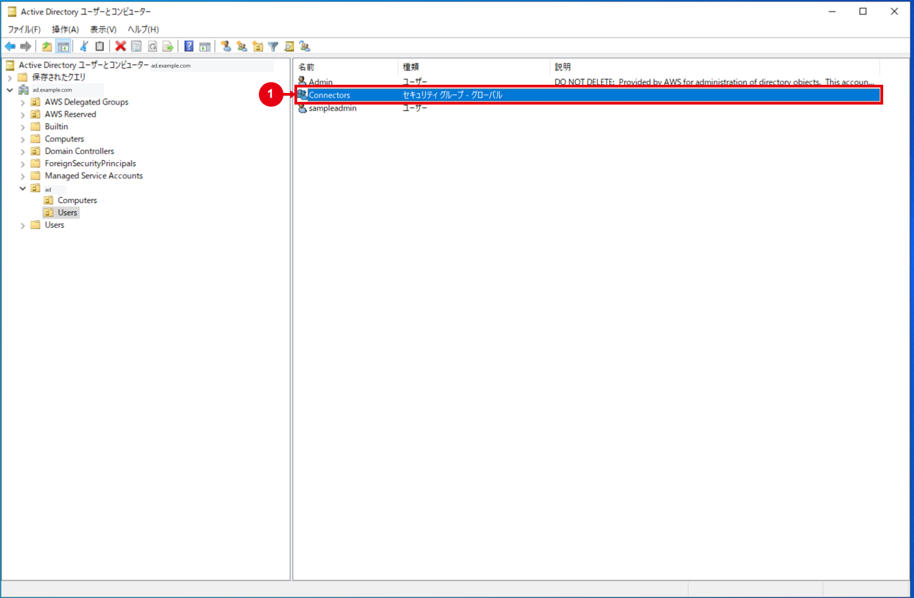
既存の同名グループがある場合は新規作成せず、スコープ、種類、用途および既存メンバーを確認します。誤って作成した場合は、メンバー、委任およびAD Connectorから使用されていないことを確認してから削除します。
2. サービスアカウントを作成する
作成前の確認
| 項目 | 確認内容 |
|---|---|
| ログオン名 | ディレクトリ内で一意で、命名規則に合致すること |
| 用途 | 対象AD ConnectorとWorkSpacesの専用アカウントとして使用すること |
| 初期パスワード | 実効パスワードポリシーを満たすこと |
| 保管 | 承認済みのシークレット保管先と管理者が決まっていること |
| 更新 | 期限前の更新日、担当者および障害時の更新手順が決まっていること |
ad\Usersを選択し、ツールバーの「現在のコンテナーに新しいユーザーを作成」を選択します。
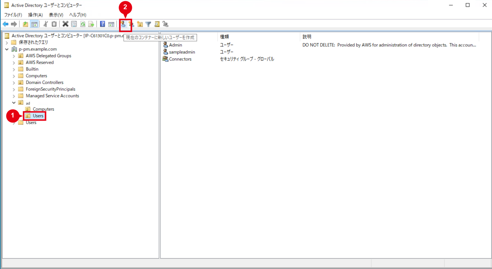
- 次の値を入力します。
| 項目 | 設定値 |
|---|---|
| 姓 | ADConnectorService |
| 名 | Service |
| フルネーム | ADConnectorService |
| ユーザーログオン名 | ADConnectorService |
| ユーザーログオン名（Windows 2000より前） | ADConnectorService |
- UPNが
ADConnectorService@ad.example.comとなり、個人ユーザーと誤認しない表示名になっていることを確認します。
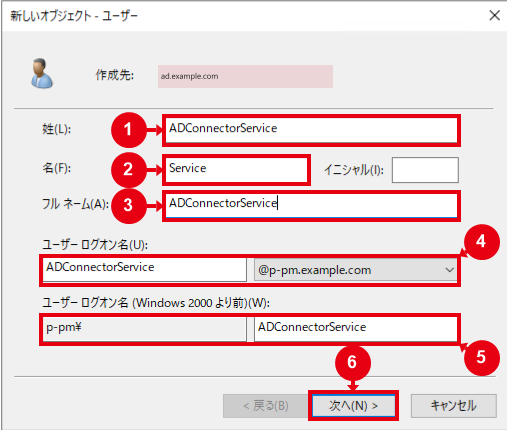
- 「次へ」を選択し、初期パスワードと確認用パスワードを入力します。
- 「ユーザーは次回ログオン時にパスワード変更が必要」をオフにします。
- アカウントを無効にする設定がオフになっていることを確認します。
- 「パスワードを無期限にする」は承認済みの運用方式に従って設定し、「次へ」を選択します。
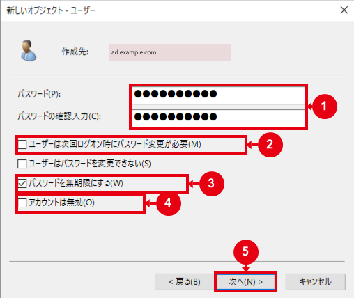
⚠️ 注意：パスワード無期限はアカウント単位の例外設定
今回の画像では「パスワードを無期限にする」が有効です。この設定により、サービスアカウントのパスワード有効期限を無期限にします。承認済みのパスワード運用に従って設定し、PSO（きめ細かなパスワードポリシー）の適用状況はGet-ADUserResultantPasswordPolicyで確認します。
- フルネーム、ユーザーログオン名およびパスワード設定を確認します。
- 「完了」を選択し、
ad\Usersの一覧にADConnectorServiceが作成されたことを確認します。
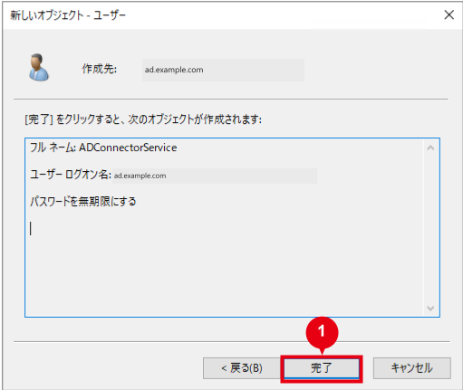
AD Connector作成前に誤りを発見した場合は、使用されていないことを確認してアカウントを無効化し、正しいアカウントを作成します。AD Connector作成後は、先にアカウントを無効化または削除しないでください。
3. サービスアカウントをConnectorsへ追加する
ad\Usersで、作成したサービスアカウントのプロパティを開きます。「所属するグループ」タブを選択します。
既定の
Domain Users以外に、意図しない高権限グループが表示されていないことを確認します。「追加」を選択します。
オブジェクト名へ
Connectorsを入力します。
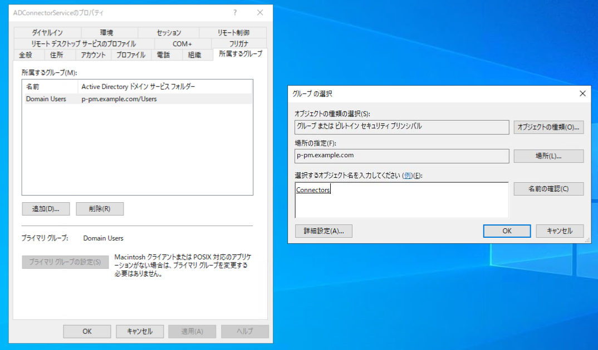
「名前の確認」を選択し、対象ドメインの
Connectorsへ解決されることを確認します。「OK」を選択します。
「所属するグループ」に
Domain UsersとConnectorsが表示されることを確認します。「適用」、「OK」の順に選択します。
4. WorkSpaces用コンピューターOUを決定または作成する
この節と次の権限委任は、WorkSpaces側のOU手順を未実施の場合だけ行います。「Amazon WorkSpaces用OU作成・権限委任・ターゲットOU設定手順」で同じOUとConnectorsへの委任を完了済みの場合は、OUと詳細ACLが本節の要件を満たすことだけを確認し、ウィザードを再実行しません。
- 承認済みのOU設計を確認します。
- 専用OUを作成する場合は、
ad\Computersを右クリックし、「新規作成」から「組織単位（OU）」を選択します。
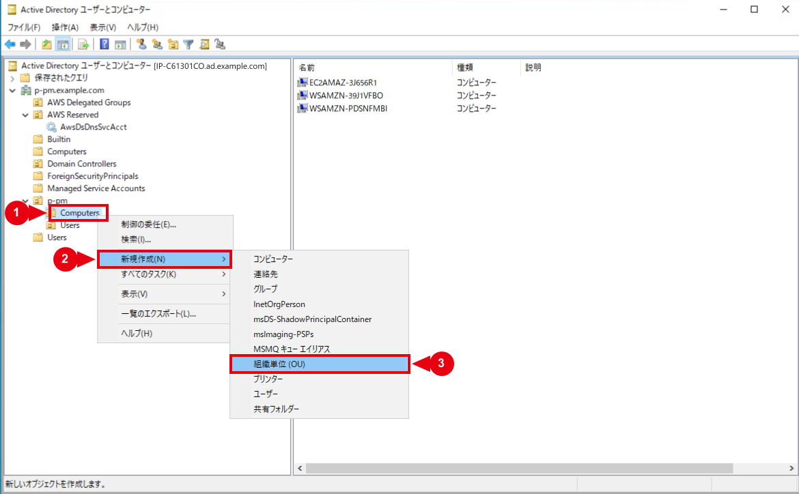
- OU名に
WorkSpacesを入力します。 - 「間違って削除されないようにコンテナーを保護する」をオンにし、「OK」を選択します。
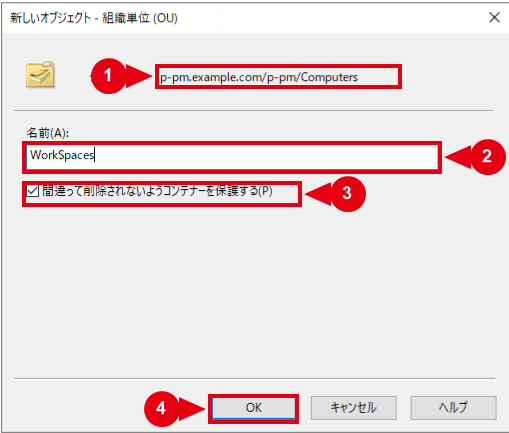
ad\Computersの配下にWorkSpacesOUが表示されることを確認します。

- OUのプロパティまたはPowerShellで識別名（DN）を確認し、運用台帳へ記録します。
Get-ADOrganizationalUnit -Filter * |
Select-Object Name, DistinguishedName5. WorkSpaces用コンピューターOUへ権限を委任する
本環境ではad\Computers\WorkSpacesをコンピューター専用OUとして使用します。OU作成とWorkSpaces側のターゲットOU設定は、「Amazon WorkSpaces用OU作成・権限委任・ターゲットOU設定手順」を参照してください。本手順では、Connectorsへコンピューターオブジェクトの作成、削除、読み取りおよび書き込みだけを委任します。
既存ACLに同じConnectorsのアクセス許可エントリがある場合は、対象オブジェクト、権限および適用先を詳細ACLで照合します。要件を満たしていれば委任ウィザードを再実行せず、重複ACEを作成しません。
AWS公式の汎用例ではコンピューターオブジェクトとユーザーオブジェクトの両方を選択する場合がありますが、ユーザーを格納しない本環境のWorkSpaces専用OUへ、ユーザーオブジェクトの作成・削除・書き込み権限は追加しません。ユーザー検索に必要な読み取りはad\Users側で維持し、AD Connectorが「アクティブ」でWorkSpacesコンソールから対象ユーザーを検索できることで確認します。
権限の範囲を広げないため、委任開始時にad\Computers\WorkSpacesを選択したことを確認します。AWS Managed Microsoft ADでは、ドメインルート、AWS ReservedおよびDomain Controllersから開始しません。
ADUCで、承認済みのWorkSpacesコンピューター格納先OUを選択します。
対象OUを右クリックし、「制御の委任」を選択します。
「オブジェクト制御の委任ウィザードの開始」が表示されたことを確認し、「次へ」を選択します。この開始画面自体には対象OUは表示されません。

- 「選択されたユーザーとグループ」で「追加」を選択します。
- 検索場所が対象ドメインになっていることを確認し、オブジェクト名へ
Connectorsを入力して、「名前の確認」を選択します。 - 対象ドメインの
Connectorsへ解決されたことを確認し、「OK」を選択します。
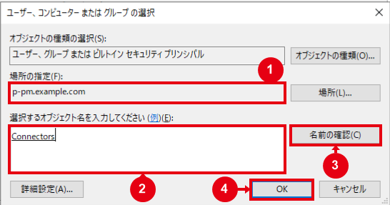
- 「選択されたユーザーとグループ」に
Connectorsだけが表示されていることを確認し、「次へ」を選択します。

- 「委任するタスク」で「委任するカスタムタスクを作成する」を選択し、「次へ」を選択します。
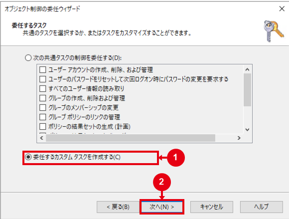
- 「Active Directoryオブジェクトの種類」で「フォルダー内の次のオブジェクトのみ」を選択します。
- 「コンピューター オブジェクト」を選択します。本環境のWorkSpaces専用OUでは「ユーザー オブジェクト」を選択しないでください。
- 同じ画面で次の項目を選択し、「次へ」を選択します。
- このフォルダーに選択したオブジェクトを作成する
- このフォルダー内の選択したオブジェクトを削除する
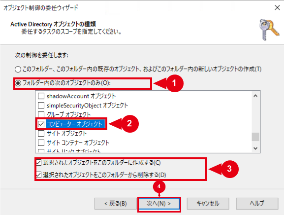
- 「これらのアクセス許可を表示します」で「全般」と「プロパティ固有」が選択され、「特定の子オブジェクトの作成または削除」が未選択になっていることを確認します。
- 「アクセス許可」で「読み取り」を選択し、WorkSpaces利用のため「書き込み」も選択して「次へ」を選択します。
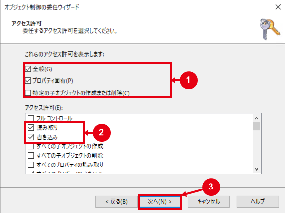
- 「オブジェクト制御の委任ウィザードの完了」で、委任先OU、対象グループ、対象オブジェクトおよび権限を確認します。
- 内容に問題がなければ「完了」を選択します。
ℹ️ 情報：WorkSpaces利用時は書き込み権限も選択する
基本例では「読み取り」のみを選択しますが、シームレスなドメイン参加またはWorkSpacesを使用する場合は「書き込み」も有効にします。本環境ではWorkSpacesを使用するため、図13の「読み取り」と「書き込み」の両方を選択した状態が正しい設定です。
AD Connectorのサービスアカウントへ権限を委任する
運用作業
1. サービスアカウントのパスワードを更新する
AWS Managed Microsoft ADの既定ドメインポリシーでは、パスワードの最大有効期間は42日です。Fine-Grained Password Policy（FGPP）または承認済みのアカウント例外がない場合、サービスアカウントにも適用されます。
期限切れ、ロック、無効化、または「次回ログオン時にパスワード変更」が有効になると、AD Connectorのユーザー検索およびWorkSpacesのドメイン参加が失敗する可能性があります。
PasswordNeverExpires=Trueの場合、サービスアカウントのパスワード有効期限は無期限です。PSOの適用状況は次のコマンドで確認します。
Get-ADUserResultantPasswordPolicy -Identity 'ADConnectorService'PSOが返されない場合は、ドメイン既定のパスワードポリシーを確認します。
Get-ADDefaultDomainPasswordPolicy -Identity 'ad.example.com'AWS Managed Microsoft ADのパスワードポリシー
更新手順
- 変更日時、担当者、対象AD Connector、影響確認項目および切り戻し担当者を確定します。
- AD側でサービスアカウントのパスワードを変更します。
- 直後にDirectory Serviceのディレクトリ一覧から、対象AD ConnectorのディレクトリIDを選択します。「サービスアカウントの認証情報」で「更新」を選択し、サービスアカウント名、新パスワード、確認用パスワードを入力して更新します。
- AD Connectorのステータスが「アクティブ」になっていることを確認します。
- WorkSpacesからADユーザーを検索できることを確認します。
- 必要に応じて検証用WorkSpaceの作成またはドメイン接続を確認します。
- 次回更新日と結果を運用台帳へ記録します。
⚠️ 注意：パスワード変更はAD側から実施する
変更順序は、必ず「AD側」から「AD Connector側」とします。AD側で変更した直後に、AD Connectorへ保存されている認証情報を同じ新パスワードへ更新してください。AD Connector側だけを更新しても、Active Directory側のパスワードは変更されません。
42日の既定ポリシーを使用する場合は、組織で承認された更新周期に従い、有効期限より前に変更を完了します。
2. 認証エラー発生時の状態を確認する
❌ エラー：ユーザー検索やドメイン参加に失敗する場合
次の項目を確認し、期限切れや登録情報の不一致がある場合は、AD側とAD Connector側の認証情報を更新します。権限不足の場合は、対象OUと既存の委任内容を確認してから修正します。
- アカウントが有効になっていること
- アカウントがロックされていないこと
- パスワードが期限切れでないこと
- 次回ログオン時の変更が要求されていないこと
- Directory Serviceへ登録された認証情報がAD側の現在値と一致していること
- 対象OUに、承認済みの委任が残っていること
3. サービスアカウントを切り替え、旧アカウントを無効化・削除する
AD Connectorが使用中のサービスアカウントを先に無効化、削除またはConnectorsから除外してはいけません。
安全に切り替える場合は、次の順序で実施します。
- 新しい専用サービスアカウントを作成し、
Connectorsへ追加します。 - AD Connectorの認証情報を新アカウントへ更新します。
- AD Connectorの「アクティブ」、ユーザー検索および検証用WorkSpace作成を確認します。
- 問題がある場合は、AD Connectorを旧アカウントへ戻します。
- 正常確認後に旧アカウントを無効化します。
- 定められた観察期間後に、旧アカウントを
Connectorsから除外して削除します。
Connectorsの委任設定は、新アカウントも使用します。アカウント切り替えだけを理由に削除しません。
委任設定が不要になり、削除する場合は、対象OUの詳細なセキュリティ設定でConnectorsに対する明示的なアクセス制御エントリだけを削除します。継承された権限や、他のユーザー・グループの権限を変更しません。
既存のad\Usersへの委任が適切かは、WorkSpacesのターゲットOUと継承設計を確認して判断します。対象外OUへの不要な明示的委任と確認できた場合に限り、正しいOUへの委任と動作確認が完了してから、Users OU上のConnectorsに対する明示的な権限だけを削除します。
作業後確認
ADオブジェクトの確認
対象ドメインの管理資格情報でPowerShellを起動して実行します。本手順ではADConnectorServiceを確認します。
Get-ADUser -Identity 'ADConnectorService' `
-Properties Enabled,LockedOut,PasswordExpired,PasswordNeverExpires,PasswordLastSet,pwdLastSet |
Select-Object SamAccountName,
Enabled,
LockedOut,
PasswordExpired,
PasswordNeverExpires,
PasswordLastSet,
pwdLastSet
Get-ADPrincipalGroupMembership 'ADConnectorService' |
Select-Object Name, GroupScope, GroupCategory次を確認します。
EnabledがTrueになっていることLockedOutとPasswordExpiredがFalseになっていることpwdLastSetが0ではなく、次回ログオン時のパスワード変更が要求されていないことPasswordNeverExpiresが承認済みの運用方式と一致していることConnectorsへ所属していること- 申請されていない高権限グループへ所属していないこと
Connectorsがグローバル／セキュリティグループになっていることも確認します。OUの委任内容は、承認済みのDNへ読み替えて確認し、Connectorsに対するコンピューターオブジェクトの作成・削除・読み取り・書き込み権限と適用先を照合します。
dsacls '<WorkSpacesコンピューターOUのDN>'本手順のOUを指定するコマンド例
ad.example.comのad\Computers\WorkSpaces OUを確認する場合は、次のように指定します。DNは、対象OUから親OU、ドメインの順に記述します。
dsacls 'OU=WorkSpaces,OU=Computers,OU=ad,DC=ad,DC=example,DC=com'このコマンドは対象OUのアクセス許可を表示します。出力内のad\Connectorsについて、コンピューターオブジェクトの作成・削除権限、子コンピューターに適用する読み取り・書き込み権限および継承範囲を確認します。上記は実行するコマンドの例で、実環境の実行結果は掲載していません。
AD ConnectorおよびWorkSpacesの確認
次の項目は、後続のAD Connector・WorkSpaces構築時、または既存環境の認証情報を更新した後に確認します。初回のサービスアカウント作成時点では未実施の項目です。再構築・削除の検証には、業務利用中のWorkSpaceを使用しません。
- Directory ServiceでAD Connectorのステータスが「アクティブ」になっていることを確認します。
- WorkSpacesから対象ディレクトリのADユーザーを検索できることを確認します。
- 検証用WorkSpaceを1台作成できることを確認します。
- コンピューターオブジェクトが承認済みのWorkSpaces OUへ作成されることを確認します。
- 検証ユーザーがWorkSpaceへサインインできることを確認します。
- 再構築および削除の検証で、OU権限エラーが発生しないことを確認します。
ネットワーク接続テストだけでは、OUへのコンピューターオブジェクト作成権限まで確認できません。最終確認には新しい検証用WorkSpaceの作成が必要です。